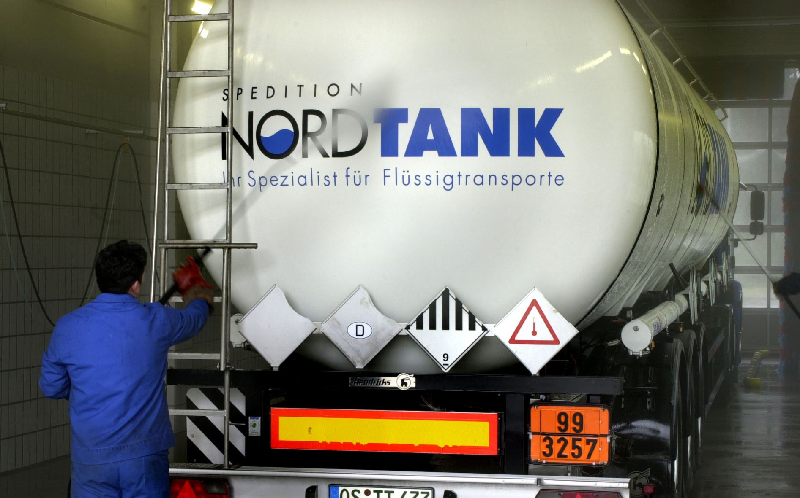

Die TRR Tankreinigung ist Ihre Anlaufstelle in Rheine für eine saubere Dienstleistung. Für die Tankinnenreinigung setzt TRR moderne Technik ein und sorgt für Sauberkeit:
Die moderne und sichere Abwasserbehandlung erfüllt mit ihren biologische Aufbereitungsstufen sowie der separaten Abgasführung sämtliche Anforderungen aus ökologischen und ökonomischen Gesichtspunkten.
Qualität, Sicherheit und ökologisches Bewusstsein bilden bei der TRR Tankreinigung GmbH die Grundlage für alle Dienstleistungen.
Unsere Kunden sind vor allem Speditionen für die Branchen Chemie und Lebensmittel. Bei diesen Transporten muss besonders auf Sauberkeit geachtet werden, damit der Tankinhalt nicht verschmutzt oder verunreinigt wird.
Wir reinigen Ihre Straßentankwagen, Silo-Fahrzeuge, Tankcontainer und IBC’s (ausgenommen giftige, radioaktive, ansteckungsgefährliche und explosive Stoffe).